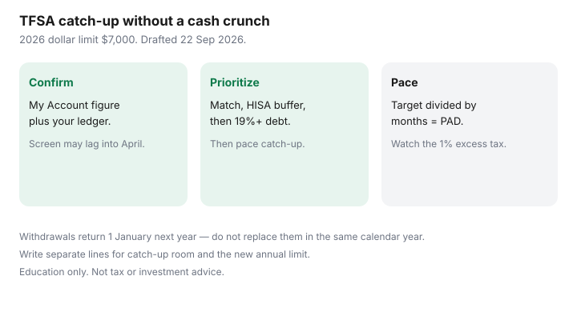

Personal Finance · Canada
How to Catch Up Unused TFSA Room in Canada Without Wrecking Cashflow
Unused TFSA room is not a bonus waiting for a windfall. It is contribution room you already earned — the annual dollar limit for each year you were a resident adult, plus unused room, minus contributions, with withdrawals returning next 1 January. The 2026 dollar limit is $7,000. Households leave six-figure theoretical room idle because a lump sum feels impossible next to rent and kids.
This is a cashflow-safe catch-up plan: confirm room, pace monthly transfers, order debt and emergency cash first, and avoid the 1% per month excess tax. Education only — not tax or investment advice. CRA TFSA pages were used 22 Sep 2026.
Disclosure: Brokerage TFSA and banking offers are offer types only. Saving Optimizer may later add partner links. We do not currently claim issuer partnerships. This is education, not tax or investment advice. Confirm room in CRA My Account and your own ledger.
Key takeaways
- Confirm unused room in CRA My Account, then trust your ledger when the screen lags into April.
- Pace catch-up monthly after payroll so bills still clear.
- Employer match, one-month HISA buffer, and 19%+ debt come before aggressive TFSA catch-up.
- Each 1 January adds new annual room — write separate lines for catch-up versus the new year.
- Excess contributions can attract 1% tax per month; Form RC243 is the excess path.
Confirm unused room in CRA My Account (and lag caveats)
Sign in to CRA My Account and open the TFSA contribution room figure. Issuers generally have until the end of February to report the prior year. The online total often refreshes into April. Your own ledger — every contribution and withdrawal by date — overrides a stale screen. The how-to is read TFSA room in CRA My Account.
If you withdrew this year, that amount does not come back until 1 January next year. Do not “catch up” by replacing a withdrawal in the same calendar year. That mistake is how people over-contribute while feeling responsible. Details: withdrawals and next year’s room.

Pace catch-up monthly so bills still clear
Divide the catch-up target by the months you will actually fund. Example: $12,000 of unused room and a 24-month horizon is $500 a month, not a $12,000 guilt cheque in November. Align the PAD with the business day after payroll, the same habit as TFSA automation and pay yourself first.
If a month will miss hydro or childcare, skip the catch-up transfer that month. Idle room is cheaper than an NSF and a card revolve. Keep the catch-up line visible in the zero-based sheet so February does not invent money that January already spent.
Priority order vs high-interest debt and emergency cash
Order before aggressive TFSA catch-up:
- Employer match you will vest, if the payroll deduction still clears bills.
- About one month of must-pays in an unregistered HISA.
- Revolving balances around 19% and up.
- Then TFSA catch-up sized to remaining cashflow and room.
That ladder matches debt or TFSA. Catching up room while carrying a 21% card is usually a rate trade you lose. Idle TFSA room is not interest at 21%.
Multi-year catch-up calendars
| Unused room to catch | Horizon | Monthly transfer | Also fund? |
|---|---|---|---|
| $6,000 | 12 months | $500 | Current-year room only if cashflow remains after the $500. |
| $14,000 | 24 months | About $583 | Pause if the HISA buffer dips below one month. |
| $25,000 | 36 months | About $695 | Do not also max a new year’s $7,000 unless the sheet still balances. |
Each 1 January adds the new annual dollar limit (verify CRA each year). A catch-up PAD and a “max the new year” PAD are two lines. Write both or you will over-contribute by accident.
Avoid over-contribution while catching up
Excess TFSA contributions generally attract 1% tax per month on the highest excess in the month until you withdraw the excess or new room absorbs it. Form RC243 is the filing path when excess exists. Do not treat a pending My Account refresh as permission to contribute “what feels right.”
Hold multiple TFSA accounts only if your ledger covers all of them. Transfers between issuers done as qualifying transfers are not new contributions — but a withdrawal-and-recontribute is. When in doubt, wait for the institution’s transfer to complete before adding more cash.
A TFSA catch-up worksheet
- CRA My Account room figure and the date you copied it.
- Personal ledger total (contributions − withdrawals + prior unused), compared to the screen.
- One-month must-pay buffer: funded / not funded.
- Any revolving balance at or above about 19%: yes / no, and the extra payment already committed.
- Catch-up target ($) ÷ months = monthly PAD.
- Current-year annual limit still available after the catch-up PAD: $_____.
- Next 1 January reminder: withdrawn amounts return; raise or resume the PAD only after you recalculate.
Sources & date stamps
- CRA, Tax-Free Savings Account (TFSA) — 2026 dollar limit $7,000; unused room carries forward; withdrawals return 1 January; excess tax 1% per month; Form RC243 (used 22 Sep 2026).
- Issuer reporting generally by end of February; My Account often refreshes into April — treat your ledger as the live control.
Frequently asked questions
Does unused TFSA room expire?
Unused contribution room generally carries forward while you remain eligible. It does not expire each 31 December the way some people fear. Confirm your figure in CRA My Account.
Can I catch up the same year I withdrew?
Withdrawals usually return as room on 1 January of the next year. Replacing a withdrawal in the same calendar year is a common over-contribution path.
Should I max catch-up before paying a 20% card?
Usually no. Clear revolving high-interest balances and keep a one-month buffer first. Idle TFSA room is not a 20% return.
How do I avoid the 1% excess tax?
Ledger every contribution across all TFSAs. Do not contribute on a stale My Account number. Withdraw excess promptly if you make a mistake and read Form RC243.
Is this investment advice?
No. This page is about contribution room and cashflow. What you hold inside the TFSA is a separate decision.